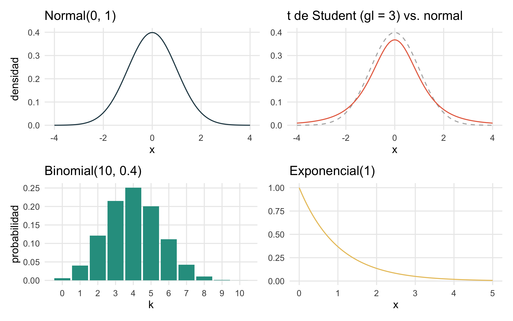
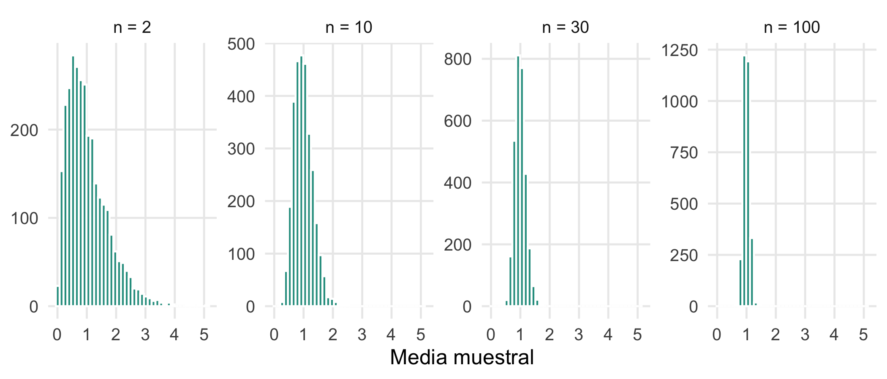
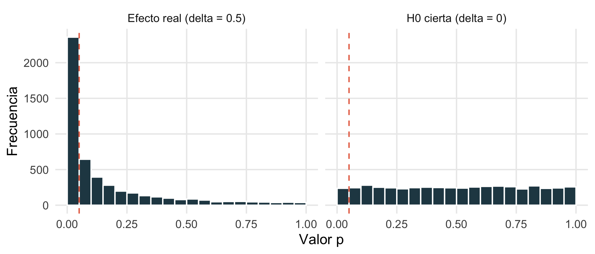
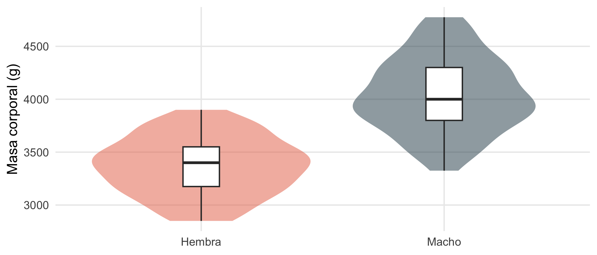
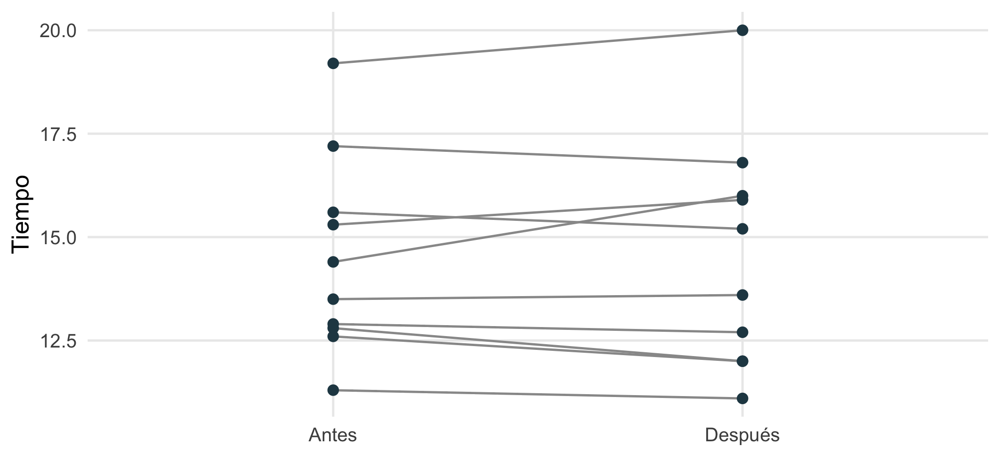
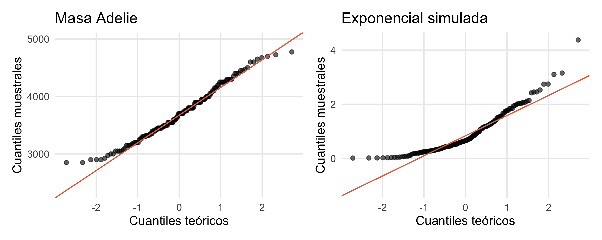
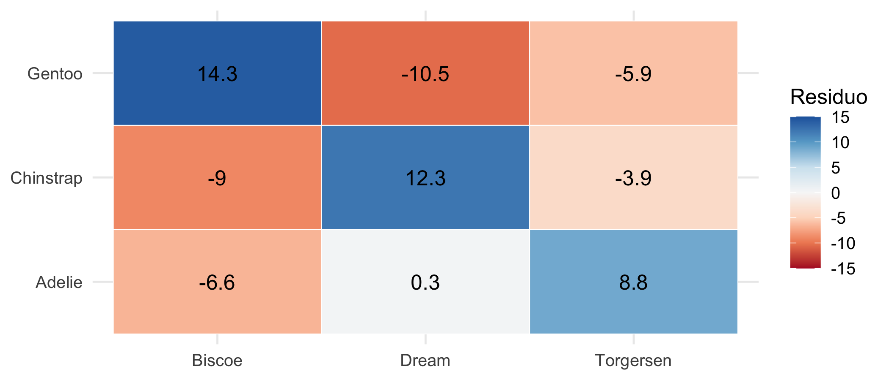
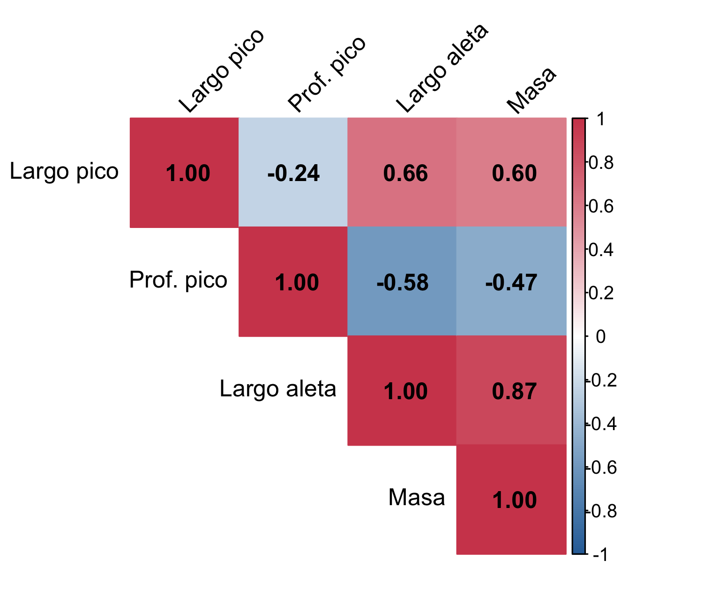
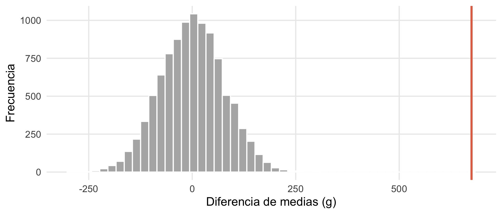
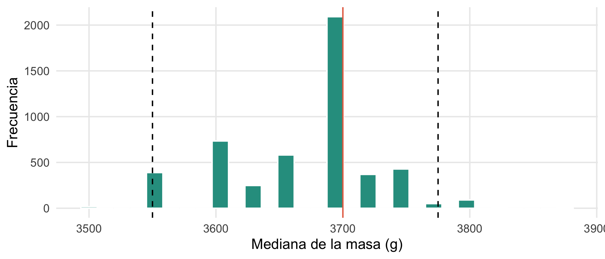

library(tidyverse)
library(palmerpenguins)
library(broom) # resultados de pruebas como tablas
library(corrplot)
library(boot)
set.seed(2026)
theme_set(theme_minimal(base_size = 12) + theme(panel.grid.minor = element_blank()))Estadística básica: pruebas de hipótesis, correlación y remuestreo
Minicurso de R · Módulo 4
R
estadística
pruebas de hipótesis
bootstrap
correlación
Distribuciones, intervalos de confianza, pruebas t, chi-cuadrado, correlación, pruebas de permutación y bootstrap, con la lógica detrás de cada método.
Objetivos de aprendizaje
Al terminar este cuaderno podrás:
- Describir una muestra y trabajar con distribuciones de probabilidad en R.
- Explicar la lógica de una prueba de hipótesis (valor p, error tipo I y II, potencia).
- Comparar medias con la prueba t (una muestra, dos muestras, pareada) y verificar sus supuestos.
- Analizar tablas de contingencia con chi-cuadrado y medir asociaciones con correlación.
- Estimar incertidumbre sin fórmulas con bootstrap y pruebas de permutación.
- Reportar resultados con tamaños de efecto e intervalos de confianza, no solo con valores p.
1. Distribuciones de probabilidad
R tiene cuatro funciones para cada distribución, identificadas por un prefijo:
| Prefijo | Qué calcula | Ejemplo con la normal |
|---|---|---|
d |
densidad (o probabilidad puntual) | dnorm(x, media, sd) |
p |
probabilidad acumulada \(P(X \le x)\) | pnorm(1.96) |
q |
cuantil (inversa de p) |
qnorm(0.975) |
r |
números aleatorios | rnorm(100) |
pnorm(1.96) # P(Z <= 1.96)[1] 0.9750021qnorm(c(0.025, 0.975)) # límites del 95 % central[1] -1.959964 1.9599641 - pnorm(120, mean = 100, sd = 15) # P(X > 120) si X ~ N(100, 15)[1] 0.09121122dbinom(3, size = 10, prob = 0.5) # P(exactamente 3 éxitos en 10 ensayos)[1] 0.1171875ppois(2, lambda = 4) # P(X <= 2) si X ~ Poisson(4)[1] 0.2381033library(patchwork)
x <- seq(-4, 4, length.out = 300)
p1 <- ggplot(tibble(x), aes(x)) +
stat_function(fun = dnorm, colour = "#264653") +
labs(title = "Normal(0, 1)", y = "densidad")
p2 <- ggplot(tibble(x), aes(x)) +
stat_function(fun = dnorm, colour = "grey70", linetype = 2) +
stat_function(fun = dt, args = list(df = 3), colour = "#e76f51") +
labs(title = "t de Student (gl = 3) vs. normal", y = NULL)
p3 <- ggplot(tibble(k = 0:10, p = dbinom(0:10, 10, 0.4)), aes(k, p)) +
geom_col(fill = "#2a9d8f") + scale_x_continuous(breaks = 0:10) +
labs(title = "Binomial(10, 0.4)", y = "probabilidad")
p4 <- ggplot(tibble(x = seq(0, 5, length.out = 200)), aes(x)) +
stat_function(fun = dexp, args = list(rate = 1), colour = "#e9c46a") +
labs(title = "Exponencial(1)", y = NULL)
(p1 | p2) / (p3 | p4)
El teorema central del límite
Aunque los datos no sean normales, la media muestral tiende a distribuirse normalmente cuando el tamaño de la muestra crece. Es la razón por la que tantos métodos funcionan en la práctica. Lo comprobamos con datos muy asimétricos (exponenciales):
medias <- map_dfr(c(2, 10, 30, 100), \(tam) {
tibble(n = paste("n =", tam), media = replicate(3000, mean(rexp(tam, rate = 1))))
}) |> mutate(n = fct_inorder(n))
ggplot(medias, aes(media)) +
geom_histogram(bins = 40, fill = "#2a9d8f", colour = "white") +
facet_wrap(~ n, nrow = 1, scales = "free_y") +
labs(x = "Media muestral", y = NULL)
2. Teoría: cómo funciona una prueba de hipótesis
Una prueba de hipótesis sigue siempre los mismos pasos:
- Hipótesis nula \(H_0\) (no hay efecto, ni diferencia) y alternativa \(H_1\).
- Un estadístico de prueba que resume la evidencia (por ejemplo, la diferencia de medias dividida por su error estándar).
- La distribución del estadístico si \(H_0\) fuera cierta.
- El valor p: la probabilidad de obtener un resultado al menos tan extremo como el observado si \(H_0\) fuera cierta.
- La decisión: si \(p < \alpha\) (típicamente 0,05) se rechaza \(H_0\).
| \(H_0\) es cierta | \(H_0\) es falsa | |
|---|---|---|
| No se rechaza \(H_0\) | correcto | Error tipo II (probabilidad \(\beta\)) |
| Se rechaza \(H_0\) | Error tipo I (probabilidad \(\alpha\)) | correcto (potencia \(= 1 - \beta\)) |
WarningLo que el valor p NO es
El valor p no es la probabilidad de que \(H_0\) sea cierta, ni la probabilidad de que el resultado se deba al azar, ni una medida del tamaño o la importancia del efecto. Un efecto diminuto puede tener \(p\) muy pequeño con una muestra enorme, y un efecto importante puede tener \(p\) grande con una muestra pequeña (Wasserstein y Lazar, 2016). Reporta siempre el tamaño del efecto y su intervalo de confianza.
Lo vemos con una simulación: si \(H_0\) es cierta, los valores p se distribuyen de manera uniforme y por eso el 5 % de las veces rechazamos por puro azar:
pvals <- \(delta) replicate(5000, t.test(rnorm(30), rnorm(30, mean = delta))$p.value)
sim_p <- bind_rows(tibble(caso = "H0 cierta (delta = 0)", p = pvals(0)),
tibble(caso = "Efecto real (delta = 0.5)", p = pvals(0.5)))
ggplot(sim_p, aes(p)) +
geom_histogram(breaks = seq(0, 1, 0.05), fill = "#264653", colour = "white") +
geom_vline(xintercept = 0.05, colour = "#e76f51", linetype = 2) +
facet_wrap(~ caso) +
labs(x = "Valor p", y = "Frecuencia")
sim_p |> group_by(caso) |> summarise(rechaza_H0 = mean(p < 0.05))# A tibble: 2 × 2
caso rechaza_H0
<chr> <dbl>
1 Efecto real (delta = 0.5) 0.472
2 H0 cierta (delta = 0) 0.0474
La segunda cifra es la potencia de la prueba: con 30 observaciones por grupo y un efecto de 0,5 desviaciones estándar solo detectamos el efecto la mitad de las veces. Antes de un estudio conviene calcular el tamaño de muestra necesario:
power.t.test(delta = 0.5, sd = 1, power = 0.80, sig.level = 0.05) # n por grupo
Two-sample t test power calculation
n = 63.76576
delta = 0.5
sd = 1
sig.level = 0.05
power = 0.8
alternative = two.sided
NOTE: n is number in *each* group3. La prueba t
Compara medias cuando la variable es numérica. Sus supuestos son observaciones independientes y datos aproximadamente normales (o muestras no muy pequeñas, por el teorema central del límite).
Una muestra
¿La masa media de los pingüinos Adelie difiere de 3700 g?
adelie <- penguins |> filter(species == "Adelie") |> drop_na(body_mass_g)
t.test(adelie$body_mass_g, mu = 3700)
One Sample t-test
data: adelie$body_mass_g
t = 0.017746, df = 150, p-value = 0.9859
alternative hypothesis: true mean is not equal to 3700
95 percent confidence interval:
3626.926 3774.398
sample estimates:
mean of x
3700.662 Dos muestras independientes
¿Pesan lo mismo los machos y las hembras Adelie? t.test() usa por defecto la versión de Welch, que no supone varianzas iguales y es la recomendable.
prueba <- t.test(body_mass_g ~ sex, data = adelie)
prueba
Welch Two Sample t-test
data: body_mass_g by sex
t = -13.126, df = 135.69, p-value < 2.2e-16
alternative hypothesis: true difference in means between group female and group male is not equal to 0
95 percent confidence interval:
-776.3012 -573.0139
sample estimates:
mean in group female mean in group male
3368.836 4043.493 tidy(prueba) # el mismo resultado como tabla# A tibble: 1 × 10
estimate estimate1 estimate2 statistic p.value parameter conf.low conf.high
<dbl> <dbl> <dbl> <dbl> <dbl> <dbl> <dbl> <dbl>
1 -675. 3369. 4043. -13.1 6.40e-26 136. -776. -573.
# ℹ 2 more variables: method <chr>, alternative <chr>adelie |> drop_na(sex) |>
ggplot(aes(sex, body_mass_g, fill = sex)) +
geom_violin(alpha = 0.5, colour = NA) +
geom_boxplot(width = 0.15, fill = "white", outlier.shape = NA) +
scale_fill_manual(values = c(female = "#e76f51", male = "#264653"), guide = "none") +
scale_x_discrete(labels = c("Hembra", "Macho")) +
labs(x = NULL, y = "Masa corporal (g)")
Muestras pareadas
Cuando se mide lo mismo en los mismos individuos antes y después (o en dos condiciones), la prueba pareada analiza las diferencias y es mucho más potente. Ejemplo: tiempo de diez personas antes y después de un entrenamiento.
antes <- c(12.9, 13.5, 12.8, 15.6, 17.2, 19.2, 12.6, 15.3, 14.4, 11.3)
despues <- c(12.7, 13.6, 12.0, 15.2, 16.8, 20.0, 12.0, 15.9, 16.0, 11.1)
t.test(antes, despues, paired = TRUE)
Paired t-test
data: antes and despues
t = -0.21331, df = 9, p-value = 0.8358
alternative hypothesis: true mean difference is not equal to 0
95 percent confidence interval:
-0.5802549 0.4802549
sample estimates:
mean difference
-0.05 Como el intervalo de confianza incluye el cero y \(p > 0.05\), no hay evidencia de un cambio con esta muestra. Un gráfico de líneas que une cada par muestra lo mismo:
tibble(id = 1:10, Antes = antes, Después = despues) |>
pivot_longer(-id, names_to = "momento", values_to = "valor") |>
mutate(momento = fct_inorder(momento)) |>
ggplot(aes(momento, valor, group = id)) +
geom_line(colour = "grey60") + geom_point(size = 2, colour = "#264653") +
labs(x = NULL, y = "Tiempo")
Verificar los supuestos
La normalidad se revisa gráficamente con un gráfico cuantil-cuantil (Q-Q): si los puntos siguen la recta, los datos son aproximadamente normales. La prueba de Shapiro-Wilk complementa, pero con muestras grandes rechaza por desviaciones insignificantes.
qq <- \(x, titulo) ggplot(tibble(x), aes(sample = x)) +
stat_qq(alpha = 0.6) + stat_qq_line(colour = "#e76f51") + labs(title = titulo, x = "Cuantiles teóricos", y = "Cuantiles muestrales")
qq(adelie$body_mass_g, "Masa Adelie") | qq(rexp(150), "Exponencial simulada")
shapiro.test(adelie$body_mass_g)$p.value[1] 0.03239702shapiro.test(rexp(150))$p.value[1] 3.590951e-13
Si los supuestos no se cumplen (datos muy asimétricos y muestra pequeña), se usa la alternativa no paramétrica, que compara rangos en lugar de valores: wilcox.test() (Mann-Whitney o Wilcoxon según sea independiente o pareada).
wilcox.test(body_mass_g ~ sex, data = adelie)
Wilcoxon rank sum test with continuity correction
data: body_mass_g by sex
W = 310.5, p-value < 2.2e-16
alternative hypothesis: true location shift is not equal to 0Tamaño del efecto
La d de Cohen expresa la diferencia en unidades de desviación estándar: \(d = (\bar{x}_1 - \bar{x}_2)/s_p\). Los valores de referencia son 0,2 (pequeño), 0,5 (mediano) y 0,8 (grande).
cohen_d <- function(x, g) {
x1 <- x[g == levels(g)[1]]; x2 <- x[g == levels(g)[2]]
sp <- sqrt(((length(x1) - 1) * var(x1) + (length(x2) - 1) * var(x2)) / (length(x1) + length(x2) - 2))
(mean(x2) - mean(x1)) / sp
}
ad2 <- drop_na(adelie, sex)
cohen_d(ad2$body_mass_g, ad2$sex)[1] 2.1726784. Comparaciones múltiples
Si haces 20 pruebas con \(\alpha = 0.05\), esperas una falsa detección solo por azar. Cuando se comparan varios grupos o variables se ajustan los valores p:
# Comparar la masa entre las tres especies, dos a dos
pairwise.t.test(penguins$body_mass_g, penguins$species, p.adjust.method = "holm")
Pairwise comparisons using t tests with pooled SD
data: penguins$body_mass_g and penguins$species
Adelie Chinstrap
Chinstrap 0.63 -
Gentoo <2e-16 <2e-16
P value adjustment method: holm El método de Holm es más potente que el de Bonferroni y no requiere supuestos adicionales; "BH" controla la tasa de falsos descubrimientos y es habitual cuando hay muchísimas pruebas.
5. Tablas de contingencia y chi-cuadrado
Para dos variables categóricas la prueba de chi-cuadrado de independencia compara las frecuencias observadas \(O\) con las esperadas \(E\) si las variables fueran independientes:
\[ \chi^2 = \sum \frac{(O - E)^2}{E} \]
tabla <- table(penguins$species, penguins$island)
tabla
Biscoe Dream Torgersen
Adelie 44 56 52
Chinstrap 0 68 0
Gentoo 124 0 0prueba_chi <- chisq.test(tabla)
prueba_chi
Pearson's Chi-squared test
data: tabla
X-squared = 299.55, df = 4, p-value < 2.2e-16round(prueba_chi$expected, 1) # frecuencias esperadas si fueran independientes
Biscoe Dream Torgersen
Adelie 74.2 54.8 23.0
Chinstrap 33.2 24.5 10.3
Gentoo 60.6 44.7 18.7Los residuos estandarizados muestran qué celdas explican la asociación (valores mayores que |2| son notables):
as.data.frame(as.table(prueba_chi$stdres)) |>
rename(especie = Var1, isla = Var2, residuo = Freq) |>
ggplot(aes(isla, especie, fill = residuo)) +
geom_tile(colour = "white") +
geom_text(aes(label = round(residuo, 1))) +
scale_fill_distiller(palette = "RdBu", limits = c(-15, 15), direction = 1) +
labs(x = NULL, y = NULL, fill = "Residuo")
TipConsejo
Chi-cuadrado exige que las frecuencias esperadas sean al menos 5 en casi todas las celdas. Con muestras pequeñas usa fisher.test().
6. Correlación
La correlación mide qué tan asociadas están dos variables numéricas. Va de \(-1\) a \(1\):
- Pearson mide la relación lineal y es sensible a valores atípicos.
- Spearman trabaja con rangos, detecta relaciones monótonas (aunque no sean lineales) y es más robusta.
pd <- drop_na(penguins, bill_length_mm, flipper_length_mm)
cor.test(pd$bill_length_mm, pd$flipper_length_mm) # Pearson
Pearson's product-moment correlation
data: pd$bill_length_mm and pd$flipper_length_mm
t = 16.034, df = 340, p-value < 2.2e-16
alternative hypothesis: true correlation is not equal to 0
95 percent confidence interval:
0.5912769 0.7126403
sample estimates:
cor
0.6561813 cor.test(pd$bill_length_mm, pd$flipper_length_mm, method = "spearman") # Spearman
Spearman's rank correlation rho
data: pd$bill_length_mm and pd$flipper_length_mm
S = 2181594, p-value < 2.2e-16
alternative hypothesis: true rho is not equal to 0
sample estimates:
rho
0.6727719 mat <- penguins |>
select(`Largo pico` = bill_length_mm, `Prof. pico` = bill_depth_mm,
`Largo aleta` = flipper_length_mm, Masa = body_mass_g) |>
drop_na() |> cor()
corrplot(mat, method = "color", type = "upper", addCoef.col = "black",
tl.col = "black", tl.srt = 45, col = colorRampPalette(c("#2e6fa7", "white", "#d1495b"))(200))
WarningCorrelación no implica causalidad
Una correlación alta puede deberse a una tercera variable (confusión) o a la mezcla de subgrupos. Ver el diagrama de dispersión y las facetas del Módulo 3 antes de interpretar es imprescindible; por ejemplo, la correlación entre largo y profundidad del pico es negativa en todos los pingüinos, pero positiva dentro de cada especie.
7. Remuestreo: pruebas de permutación y bootstrap
Los métodos de remuestreo reemplazan las fórmulas por simulación usando los mismos datos. Son útiles cuando no hay una fórmula sencilla (una mediana, una razón, un índice) o cuando los supuestos de la prueba paramétrica no se cumplen.
Prueba de permutación
La idea: si \(H_0\) es cierta y los grupos no difieren, las etiquetas de grupo son intercambiables. Se barajan las etiquetas muchas veces, se recalcula el estadístico cada vez y se ve dónde cae el valor observado en esa distribución:
obs <- diff(tapply(ad2$body_mass_g, ad2$sex, mean)) # macho - hembra
perm <- replicate(10000, {
etiquetas <- sample(ad2$sex)
diff(tapply(ad2$body_mass_g, etiquetas, mean))
})
mean(abs(perm) >= abs(obs)) # valor p bilateral[1] 0ggplot(tibble(perm), aes(perm)) +
geom_histogram(bins = 50, fill = "grey70", colour = "white") +
geom_vline(xintercept = obs, colour = "#e76f51", linewidth = 1) +
labs(x = "Diferencia de medias (g)", y = "Frecuencia")
Bootstrap
El bootstrap estima la incertidumbre de cualquier estadístico remuestreando con reemplazo los datos observados. Se generan miles de “muestras” del mismo tamaño y se calcula el estadístico en cada una; la variabilidad entre ellas aproxima la variabilidad del muestreo real.
# Intervalo de confianza para la MEDIANA de la masa Adelie
mediana_boot <- function(datos, i) median(datos[i])
b <- boot(adelie$body_mass_g, mediana_boot, R = 5000)
b
ORDINARY NONPARAMETRIC BOOTSTRAP
Call:
boot(data = adelie$body_mass_g, statistic = mediana_boot, R = 5000)
Bootstrap Statistics :
original bias std. error
t1* 3700 -27.79 60.53263boot.ci(b, type = c("perc", "bca"))BOOTSTRAP CONFIDENCE INTERVAL CALCULATIONS
Based on 5000 bootstrap replicates
CALL :
boot.ci(boot.out = b, type = c("perc", "bca"))
Intervals :
Level Percentile BCa
95% (3550, 3775 ) (3550, 3750 )
Calculations and Intervals on Original Scaleic <- quantile(b$t, c(0.025, 0.975))
ggplot(tibble(m = as.numeric(b$t)), aes(m)) +
geom_histogram(bins = 30, fill = "#2a9d8f", colour = "white") +
geom_vline(xintercept = ic, linetype = 2) +
geom_vline(xintercept = median(adelie$body_mass_g), colour = "#e76f51") +
labs(x = "Mediana de la masa (g)", y = "Frecuencia")
El intervalo BCa corrige el sesgo y la asimetría del bootstrap y suele ser la mejor opción para reportar.
Ejercicios
- Distribuciones. Si la talla de una población es \(N(170, 8)\) cm, ¿qué porcentaje mide más de 185 cm? ¿Cuál es la talla que deja por debajo al 90 %?
- Prueba t. Compara la longitud de la aleta (
flipper_length_mm) entre pingüinos Adelie y Gentoo. Reporta la diferencia de medias, su IC 95 % y la d de Cohen. ¿Qué concluyes? - Chi-cuadrado. ¿Hay asociación entre la especie y el sexo? Interpreta.
- Correlación. Calcula la correlación de Spearman entre masa y aleta dentro de cada especie (usa
group_by()ysummarise()). - Bootstrap. Estima con
bootun IC del 95 % para la desviación estándar de la masa de los Gentoo.
NoteSoluciones sugeridas
# 1
1 - pnorm(185, 170, 8)[1] 0.03039636qnorm(0.90, 170, 8)[1] 180.2524# 2
dos <- penguins |> filter(species %in% c("Adelie", "Gentoo")) |> drop_na(flipper_length_mm) |>
mutate(species = droplevels(species))
tidy(t.test(flipper_length_mm ~ species, data = dos)) |>
select(estimate, conf.low, conf.high, p.value)# A tibble: 1 × 4
estimate conf.low conf.high p.value
<dbl> <dbl> <dbl> <dbl>
1 -27.2 -28.8 -25.7 3.19e-99cohen_d(dos$flipper_length_mm, dos$species)[1] 4.18005# 3
chisq.test(table(penguins$species, penguins$sex))
Pearson's Chi-squared test
data: table(penguins$species, penguins$sex)
X-squared = 0.048607, df = 2, p-value = 0.976# 4
penguins |> drop_na(body_mass_g, flipper_length_mm) |>
group_by(species) |>
summarise(rho = cor(body_mass_g, flipper_length_mm, method = "spearman"))# A tibble: 3 × 2
species rho
<fct> <dbl>
1 Adelie 0.475
2 Chinstrap 0.670
3 Gentoo 0.717# 5
gentoo <- penguins |> filter(species == "Gentoo") |> drop_na(body_mass_g) |> pull(body_mass_g)
boot.ci(boot(gentoo, \(d, i) sd(d[i]), R = 5000), type = "perc")BOOTSTRAP CONFIDENCE INTERVAL CALCULATIONS
Based on 5000 bootstrap replicates
CALL :
boot.ci(boot.out = boot(gentoo, function(d, i) sd(d[i]), R = 5000),
type = "perc")
Intervals :
Level Percentile
95% (450.1, 551.9 )
Calculations and Intervals on Original ScalePara profundizar
- Wasserstein, R. L. y Lazar, N. A. (2016). The ASA statement on p-values: context, process, and purpose. The American Statistician, 70(2), 129–133.
- Efron, B. y Tibshirani, R. J. (1993). An Introduction to the Bootstrap. Chapman & Hall.
- Cumming, G. (2014). The new statistics: why and how. Psychological Science, 25(1), 7–29.
- Navarro, D. (2015). Learning Statistics with R. learningstatisticswithr.com.
- Vu, J. y Harrington, D. (2020). Introductory Statistics for the Life and Biomedical Sciences. openintro.org.